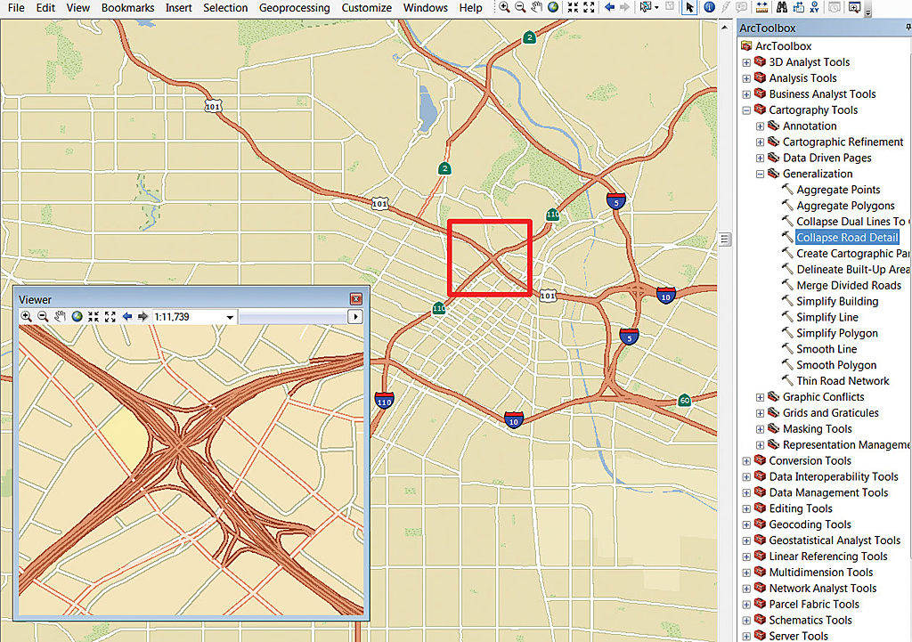
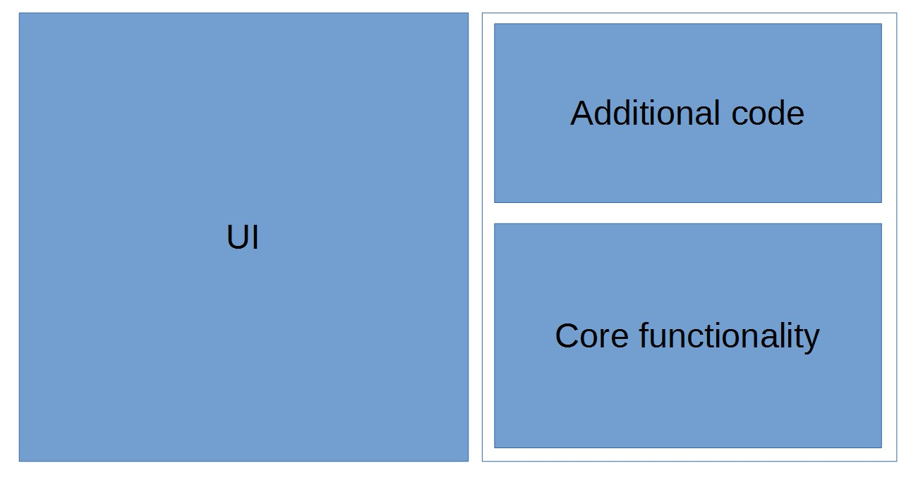
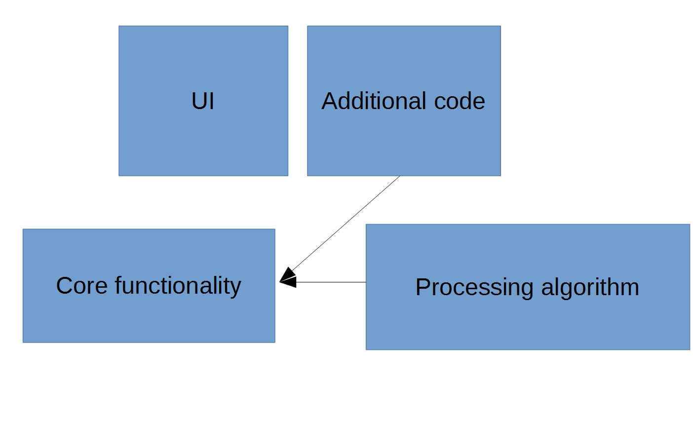

class: center, middle, inverse # Processing is not an analysis framework --- .left-column[ ## Before we start ] .right-column[ - Processing is an analysis framework., - If you develop an analysis plugin, PLEASE, use Processing. ] --- .left-column[ ## Some ideas ] .right-column[ - Project goal: to provide a common framework for analysis. - Homogeneity. - Helpful for users and developers. - Algorithms + tools to run them. - Core plugin. ] --- .left-column[ ## Some ideas ] .right-column[ - QGIS is not just analysis. - But it needs homogeneity, automation and helpful tools everywhere ] --- class: center, middle # Why not using Processing? --- class: center, middle # Use processing for your plugins, even if they don't perform data analysis --- class: center, middle # An example: cartography --- class: center, middle  --- class: center, middle # Rethink how you write plugins --- class: center, middle # Allow your plugin functionality to be used like a library --- class: center, middle # And create Processing algorithms for methods in that library --- .left-column[ ## Not good ] .right-column[  ] --- .left-column[ ## Good ] .right-column[  ] --- class: center, middle # An Example: Map Coloring --- class: center, middle # Rethink the idea of plugin --- class: center, middle # An example: Batch Save Layers --- class: center, middle # An example: Layer order --- class: center, middle, inverse # Thanks! ## Víctor Olaya ## volaya@boundlessgeo.com